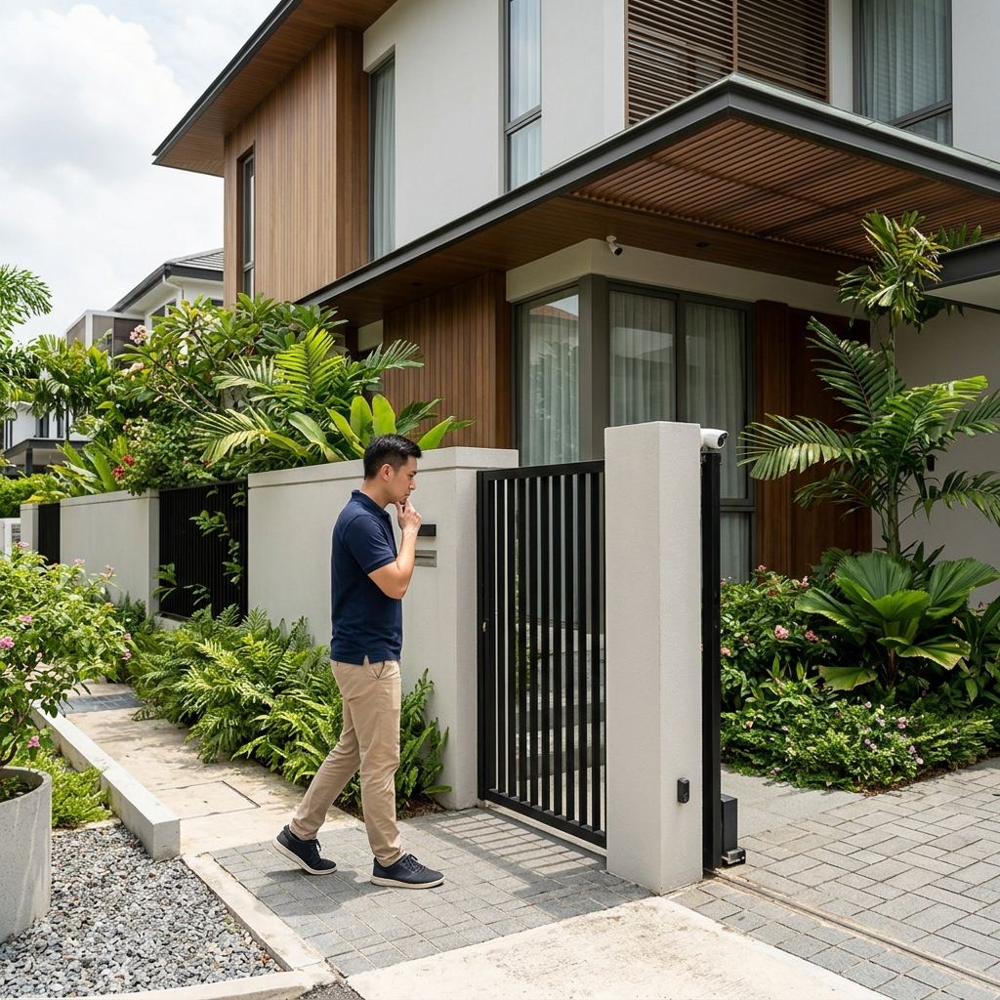

1. How burglars actually make their decision
Before we get to the tips, it helps to understand the calculus a burglar uses. It is not random. They are assessing two things: how quickly they can get in, and how likely they are to be seen doing it. A property that scores badly on both — slow entry and high visibility — gets passed over for an easier target nearby.
This means that most residential and commercial security is not about making your property impenetrable. It is about making it more trouble than it is worth compared to the next property along. Layered deterrence, not a single line of defence, is what achieves that.
Burglars choose targets, they do not commit to them. Every additional layer of security you add increases the chance they move on to somewhere easier.
2. Layer your defences — one is never enough
A single lock on a door is a single obstacle. A lock, a grille, a motion-triggered light, and an alarm is four obstacles — each one adding time and noise and the risk of being seen. This is the principle behind layered security and it applies whether you are protecting a HDB flat, a landed home, or a commercial shophouse.
The layers do not all need to be expensive. Visible deterrents — a prominent alarm siren box, a CCTV camera over the main entrance, good lighting — cost relatively little and do a disproportionate amount of work because they change the burglar's assessment before he even tries the gate.
3. Audit your property for blind spots
Stand outside your own property and look at it the way a burglar would. Walk the perimeter. Identify every point where someone could approach without being seen from the street or from neighbouring properties. Look for:
- Sections of boundary wall or fence that are hidden by vegetation or parked vehicles
- Ground floor windows not visible from the road
- Dark areas at night where lighting does not reach
- Side or rear access points that are out of sight
If you can spot a weakness from outside, so can someone who is casing the property. The audit takes twenty minutes and tells you where to prioritise.

4. The lock is not enough — think about the frame
Most residential door locks in Singapore can be bypassed not by picking the lock but by attacking the door frame around it. A cheap lock set into a weak frame means the door gives way before the lock does. The same applies to sliding doors — a thin blade slid into the gap between frame and door can release most standard window latches.
What to check:
- All external doors should have deadbolts, not just latch locks. Test by trying to depress the tongue with your finger when the door is locked — a properly graded lock will not move.
- Door frames on external doors should be reinforced metal or solid hardwood, not hollow MDF or thin timber.
- Sliding doors benefit from a security bar in the track — a length of metal rod that prevents the door being slid open even if the latch is compromised.
- Window grilles remain one of the most cost-effective physical barriers for ground floor and accessible upper floor windows in Singapore's terrace and semi-detached housing.
5. Lighting is underrated as a deterrent
Motion-triggered lights at all approach paths to the property — front gate, side access, rear garden — are one of the cheapest and most effective deterrents available. A burglar who suddenly finds himself illuminated while approaching a property will typically abandon the attempt immediately.
Key points on lighting:
- Motion sensors should cover the full approach, not just the immediate door area
- LED floodlights are inexpensive to run and bright enough to be effective
- Timer-controlled interior lights when the property is empty simulate occupancy and deter opportunistic targeting
- For commercial premises, well-lit car parks and perimeter areas reduce both burglary risk and the risk of other incidents
6. CCTV — visible cameras change behaviour
A camera that is seen is doing deterrence work even when it is not being watched. Position at least one camera to be clearly visible from the main approach to the property. The goal is for anyone approaching to know they are being recorded before they reach the entrance.
For CCTV to do evidence work — to actually identify a perpetrator after an incident — it needs to be positioned correctly and have adequate resolution. The camera over the entrance should be at face height or slightly above, not mounted at roofline pointing down at the top of a head. A 4MP IP camera with good night vision is the minimum standard for meaningful evidence capture in 2025.
If budget allows for only one camera, put it at the main entrance at a height and angle that captures faces. A camera that shows the top of someone's head is evidence of nothing useful.
7. Alarm systems — make it loud and monitored
An audible siren does two things: it alerts neighbours and passers-by, and it creates urgency for the intruder to leave. A monitored alarm does a third thing: it triggers a response. The combination of the two is significantly more effective than either alone.
Key points:
- A siren box mounted visibly on the exterior — even before the alarm is triggered — deters entry attempts
- Monitoring services in Singapore can dispatch a response within minutes of a confirmed alarm
- The alarm panel should be positioned away from the front door so there is no easy opportunity to smash it before the entry delay expires
- Test your alarm system regularly — a system that has not been tested in six months may not work when you need it
8. Secure your sliding doors and windows
Sliding doors and windows are common vulnerabilities in Singapore's terrace houses, condominiums, and commercial shopfronts. The standard latch on most sliding systems is minimal security at best.
Practical measures:
- Anti-lift pins or bolts prevent the door being lifted out of the track
- Security bars in the track prevent the door being slid open
- Safety film on glass panels makes breaking through a significantly slower process — it does not stop the glass breaking but holds the shards together and requires sustained effort to penetrate
- For condominium units, the main door and service door both need attention — service entrances are frequently overlooked
9. Neighbourhood awareness matters more than you think
In Singapore's landed housing estates, neighbourhood watch schemes and alert neighbours are a genuine crime deterrent. The reason is simple: a burglar operating in an area where neighbours pay attention to unfamiliar activity has a much higher chance of being seen, reported, or interrupted.
This does not require a formal scheme. Simple habits matter:
- Know your immediate neighbours well enough that you would notice an unfamiliar vehicle parked outside their property for an unusual length of time
- If you see something that does not look right, report it to the police via the 999 line or the SPF's X hotline rather than assuming someone else will
- For condominiums, MCST and management should ensure security briefings include guidance for residents on what to report and how
10. The alarm is your last line — not your only line
The most common mistake we see is treating the alarm system as the security system. The alarm activates after entry has been made or attempted. Everything before that moment — the lighting, the locks, the grilles, the camera visibility, the neighbourhood awareness — is what actually prevents the incident from happening.
Invest in the deterrence layers first. Then invest in the alarm and monitoring to handle the failures. A well-secured property with no alarm is better protected than a poorly secured property with an expensive monitoring contract.
Start with a proper threat assessment before spending anything. Walk the property, identify the real vulnerabilities, and address them in order of risk. In our experience, most residential properties in Singapore have two or three significant weaknesses that can be fixed for relatively little money. Spending on an alarm system before fixing a broken gate lock or adding lighting to a dark side passage is the wrong order of operations.

About the Author
Ler Wee Meng is the Founder and CEO of Securevision. He holds a Bachelor of Engineering (Electrical and Electronic) from the National University of Singapore and a Bachelor of Laws from the University of London. With over 37 years of experience in the security industry, he has personally overseen the design and implementation of security systems for more than 1,000 sites across Singapore, ranging from Good Class Bungalows (GCBs) and large-scale condominiums to industrial complexes and institutional facilities.
He is the principal architect of the Securevision SECURE™ Framework and spearheaded the development of the VESTA integration platform. His direct field experience across thousands of residential units ensures that every system designed by Securevision is practical, maintainable, and built to withstand the unique technical challenges of Singapore's climate and regulatory landscape. His engineering-first approach continues to define the standards for intelligent security integration in Singapore.